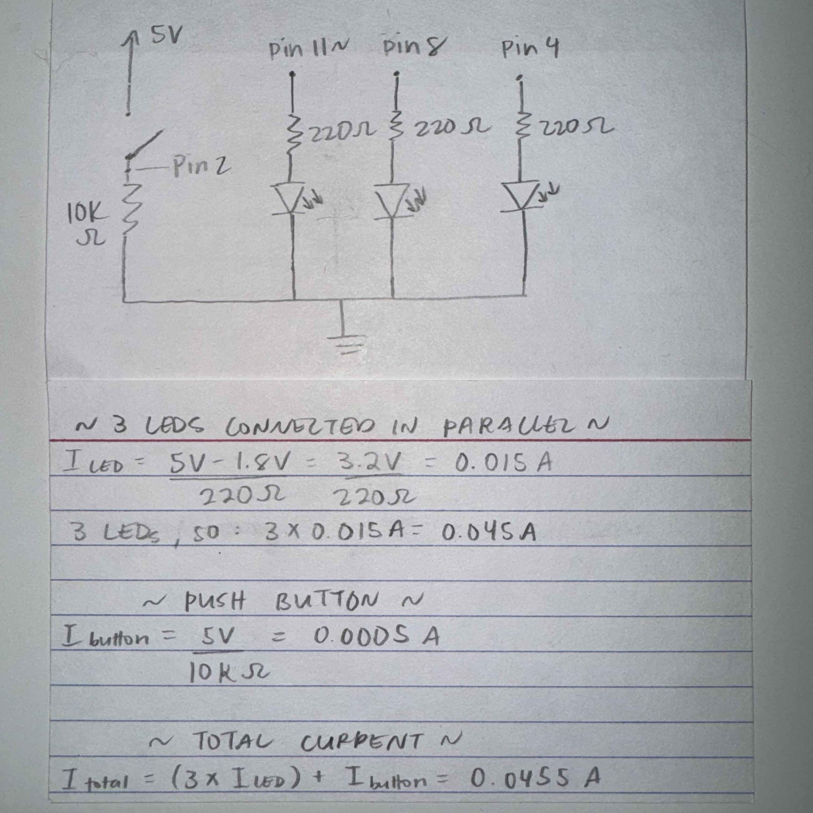
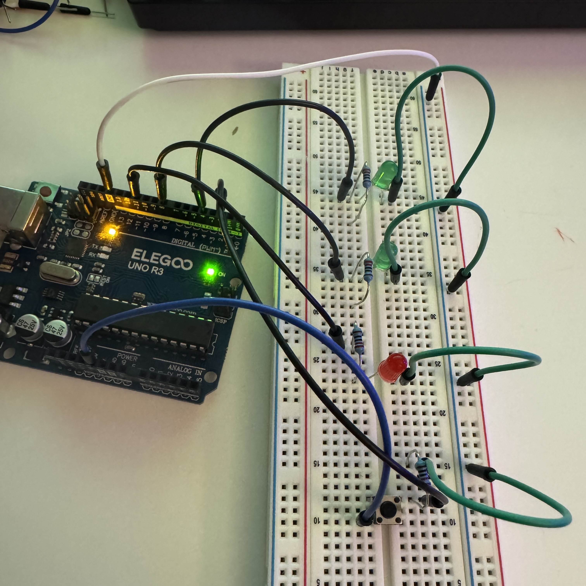
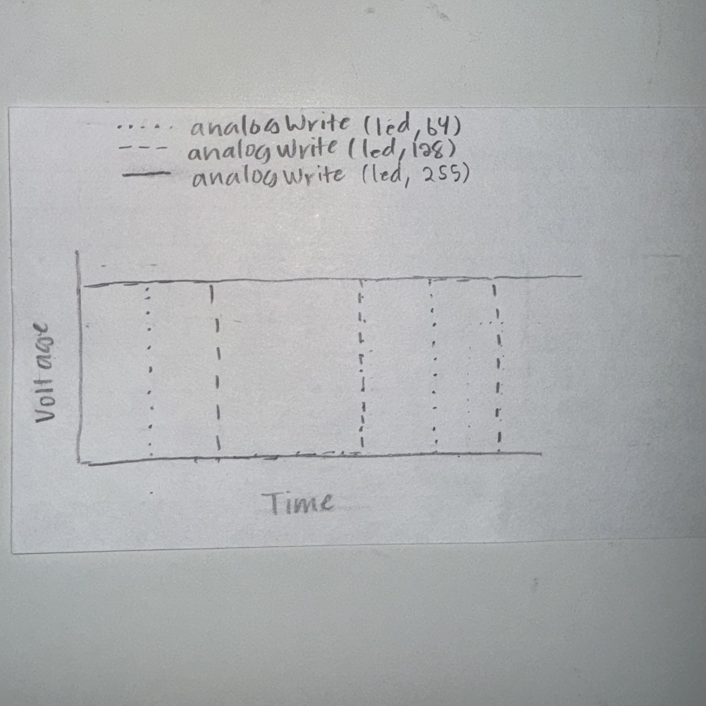

In this assignment, we were called to use a button to fade atleast
one LED light on a circuit. Shown on the left is a GIF of my circuit,
which features three LEDs and one button. When the button on the
breadboard is pressed, two LEDs turn on and one LED fades in
brightness level.

On the left is the schematic and calculations for the total
current flowing through the circuit. The schematic shows three pins
(one analog and 2 digital) connected in parallel and whose currents
limited by 220Ω; resistors. Also shown is one push button whose
current is limited by a 10kΩ resistor, which is large enough
to provide a strong pull-down effect. This assures that the button
is at 0V when unpressed and connects to 5V when pressed. The
calculations below the schematic indicate that the total current
running through the system is 0.0455A.

Here is a still photo of my circuit while the button is unpressed.
In this state, none of the LEDs are lit, since the pull-down
resistor assures that the button is at ground in this state. When
pressed, the red LED fades, which is made possible by connecting
the LED to an analog pin (pin 11 ~) on the Arduino. The two green LEDs
simply turn on when the button is pressed. As the schematic suggests,
we also see that all LEDs and the button are connected to ground,
and are arranged in parallel.
/* constant variables used to set pin numbers */
const int buttonPin = 2;
const int ledPin = 11;
/* variables that can change with pushbutton status */
int buttonState = 0;
void setup() {
/* initializes the LED pin as an output */
pinMode(ledPin, OUTPUT);
/* initialize the pushbutton pin as an input */
pinMode(buttonPin, INPUT);
}
void loop() {
/* reads the state of the push button */
buttonState = digitalRead(buttonPin);
/* checks if the button has been pressed */
if (buttonState == HIGH) {
/* turns LEDs attached to pins 4 and 8 on */
digitalWrite(8, HIGH);
digitalWrite(4, HIGH);
/* for-loop turns ledPin brighter in increments of 5 points */
for (int fadeValue = 0; fadeValue <= 255; fadeValue += 5) {
/* sets the fadeValue of the LED until it reaches 255 */
analogWrite(ledPin, fadeValue);
/* wait 25 milliseconds until the LED begins to dim */
delay(25);
}
/* for-loop turns ledPin dimmer in increments of 5 points */
for (int fadeValue = 255; fadeValue >= 0; fadeValue -= 5) {
/* sets the fadeValue of the LED until it reaches 0 */
analogWrite(ledPin, fadeValue);
/* wait for 25 milliseconds until the next command */
delay(25);
}
} else {
/* turns all LEDs off */
digitalWrite(ledPin, LOW);
digitalWrite(8, LOW);
digitalWrite(4, LOW);
}
}
Additional Questions
1. 
2. Assuming that the only thing that draws current are the LEDs,
we can first calculate the total current of the system by
taking the sum of each LED's current. Each LED has a 1.8 voltage drop,
so we calculate each individual current as (5-1.8)/220Ω= 0.015A.
Taking the sum of three individual currents, we get 0.045A. To
calculate how long the circuit will run with a 1200mAh battery (which
would also be battery life), we can divide the battery capacity
(1200mAh) by the total current (0.045A) to get 26,666 hours.